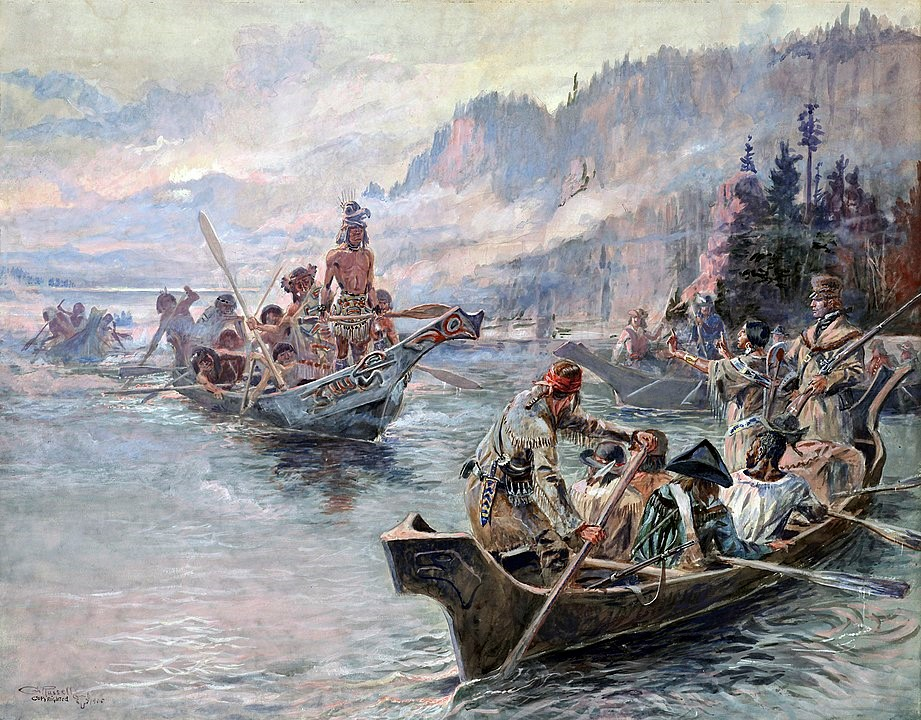

Whitewater Rafting Company

At Whitewater Rafting Company, we're more than just a destination for river rafting; we're the ultimate haven for adventure seekers and nature lovers alike. Nestled amidst breathtaking landscapes and pristine waters, our company offers an unrivaled experience for those seeking thrills and unforgettable memories. Whether you're a seasoned rafter or a first-time adventurer, our diverse range of trips cater to all levels of experience, ensuring there's something for everyone. Come join us at Whitewater Rafting Company, where the river awaits and adventure knows no bounds.
History
Whitewater Rafting Company traces its origins back to the daring adventures of Captain Robert Ashford, a seasoned sailor with a penchant for adrenaline-fueled exploits. In the summer of 1952, while navigating the treacherous rapids of the Colorado River, Captain Ashford found himself enthralled by the sheer thrill and natural beauty of whitewater rafting. Determined to share this exhilarating experience with the world, he established Whitewater Rafting Company, setting up base camp in a rustic cabin nestled along the riverbanks. Armed with little more than a passion for adventure and a fleet of makeshift rafts crafted from salvaged timber, Captain Ashford and his crew began leading intrepid explorers on heart-pounding journeys through some of the most challenging rapids known to man.

As word of their daring exploits spread, Whitewater Rafting Company quickly gained renown as the premier destination for thrill-seekers seeking the ultimate adrenaline rush. Over the decades, the company evolved, embracing technological advancements and expanding its reach to encompass a network of guided tours spanning rivers across the globe. Despite its growth, Whitewater Rafting Company remains true to its roots, with each expedition guided by a spirit of adventure and a commitment to providing unforgettable experiences for all who dare to brave the rapids. Today, the legacy of Captain Ashford lives on, as Whitewater Rafting Company continues to inspire and exhilarate adventurers from every corner of the earth.